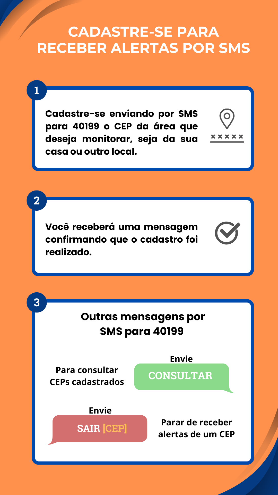

Instruções
Digite seu CEP e clique em 'Receber Alertas' para enviar o SMS.

Esta página é acessível para usuários de leitores de tela. Use os controles de navegação do seu dispositivo para explorar as opções.
Digite seu CEP e clique em 'Receber Alertas' para enviar o SMS.